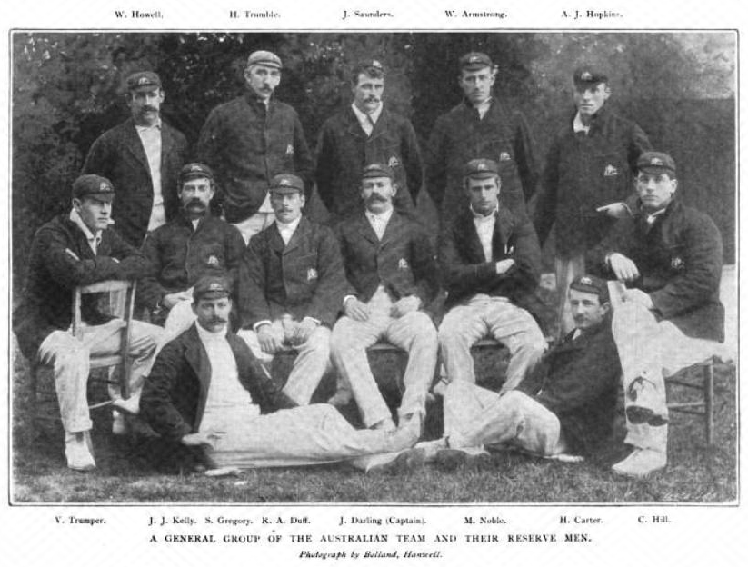

एमएस धोनी के आईपीएल मेंटॉर बनने पर वीरेंद्र सहवाग का बड़ा बयान
पूर्व भारतीय क्रिकेटर वीरेंद्र सहवाग का कहना है कि आईपीएल 2027 में चेन्नई सुपर किंग्स के मेंटॉर की भूमिका संभालने के बाद एमएस धोनी पर टीम के प्रदर्शन और संयोजन को लेकर अधिक दबाव रहेगा।

पूर्व भारतीय सलामी बल्लेबाज वीरेंद्र सहवाग ने महेंद्र सिंह धोनी के आईपीएल 2027 में चेन्नई सुपर किंग्स के मेंटॉर बनने के फैसले पर अपनी प्रतिक्रिया दी है। चेन्नई ने बीते मंगलवार को घोषणा की थी कि धोनी आगामी सीजन में बतौर खिलाड़ी नहीं बल्कि मेंटॉर की भूमिका निभाएंगे। सहवाग का मानना है कि मैदान पर खेलने की तुलना में आधिकारिक रूप से मेंटॉर की जिम्मेदारी संभालना और टीम तैयार करना धोनी के लिए अधिक चुनौतीपूर्ण रहेगा।
सहवाग ने कहा कि धोनी लंबे समय से परोक्ष रूप से टीम की कमान संभालते आए हैं, लेकिन अब उन पर टीम की हार-जीत और संयोजन की सीधी जिम्मेदारी होगी। इसके साथ ही उन्होंने धोनी के संन्यास के फैसले पर कहा कि हर खिलाड़ी के करियर में एक सही समय आता है और शायद यह संन्यास लेने का उचित समय था।
बता दें कि एमएस धोनी ने अपने आईपीएल करियर में कुल 278 मैच खेले हैं, जिसमें उन्होंने 38.30 की औसत और 137.45 के स्ट्राइक रेट से 5439 रन बनाए हैं। इस दौरान उनके नाम आईपीएल में सबसे ज्यादा 100 बार नाबाद रहने का रिकॉर्ड दर्ज है।
और पढ़ें

खेलऑस्ट्रेलियाई तेज गेंदबाज जोश हेजलवुड का पैट कमिंस को समर्थन, टेस्ट कप्तानी हटाने पर दी प्रतिक्रिया
जोश हेजलवुड ने टेस्ट कप्तान पैट कमिंस का समर्थन करते हुए कहा है कि अगर कमिंस को कप्तानी से हटाया जाता है, तो वह अपने टेस्ट करियर के भविष्य पर विचार करेंगे। साथ ही उन्होंने 2018 के सैंडपेपर विवाद में अपनी भूमिका से इनकार किया है।
खेलशिखर धवन का खुलासा, चार साल से बेटे जोरावर से नहीं हुई कोई बात
पूर्व भारतीय क्रिकेटर शिखर धवन ने एक इंटरव्यू में खुलासा किया है कि वह पिछले चार साल से अपने बेटे जोरावर से बात नहीं कर पाए हैं। उन्होंने उम्मीद जताई है कि भविष्य में उनके रिश्ते सुधरेंगे।
खेलभारत-न्यूजीलैंड पहला टेस्ट: दूसरे दिन भारत का स्कोर एक विकेट पर 159 रन
न्यूजीलैंड के 368 रन के जवाब में भारत ने पहले टेस्ट के दूसरे दिन का खेल समाप्त होने तक एक विकेट पर 159 रन बना लिए हैं। केएल राहुल और देवदत्त पडिक्कल क्रीज पर हैं।
 खेल
खेलभारत-न्यूजीलैंड वेलिंगटन टेस्ट: तीसरे दिन भारत मजबूत स्थिति में
वेलिंगटन टेस्ट के तीसरे दिन भारत ने अपनी पहली पारी में मजबूत शुरुआत की है। केएल राहुल शतक के करीब हैं और देवदत्त पडिक्कल अर्धशतक बनाकर क्रीज पर टिके हुए हैं।